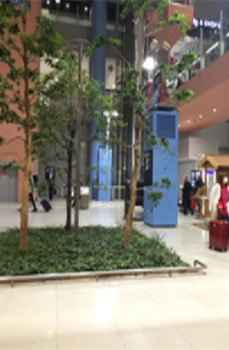
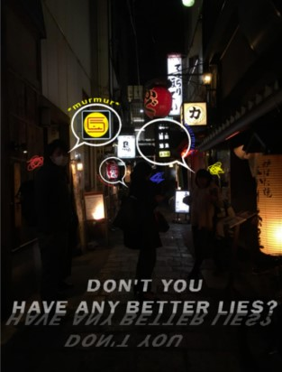
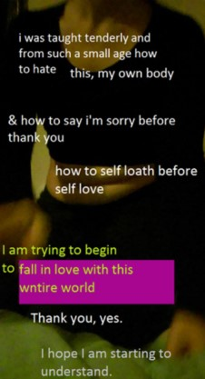
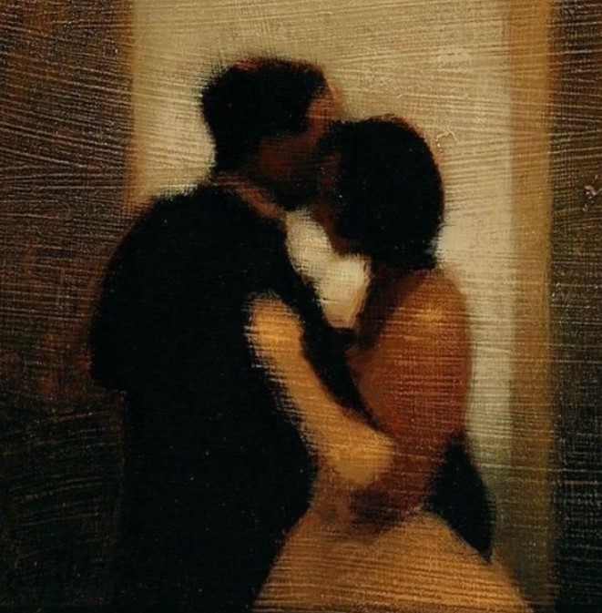
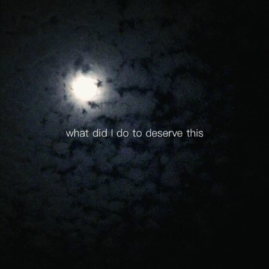

#07 (Not New)

oh so familiar...

Perhaps you have hurt me.
Well, what of it?
I have hurt you too.
And this is what humans do -
Hurt one another.

"And it turns out we really do keep writing the same thing.
I ask whether you're sick and then you write about it,
I want to die and then you, do, I want stamps and then you want stamps,
sometimes I want to cry on your shoulder like a little boy
and then you want to cry on mine like a little girl.
And sometimes and ten times and a thousand times and always
I want to be with you and you are saying the same thing.
Enough, enough."
- Franz Kafka, Letters to Milena -

She didn't require much and desired very little.
A kind word, sincerity, fresh air, clean water,
a garden, caresses, books to read, a warm bed,
and the ability to love and be loved in return.
...
"Despite all this, writing really is a good thing;
I am now calmer than I was 2 hours ago outside on the balcony with your letter.
While I was lying there a beetle had fallen on its back one step away and was desperately trying to right itself;
I would have gladly helped—it was so easy, so obvious,
all that was required was a step and a small shove—but I forgot about it because of your letter;
I was just as incapable of getting up.
Only a lizard again made me aware of the life around me,
its path led over the beetle,
which was already so completely still that I said to myself,
this was not an accident but death throes,
the rarely witnessed drama of an animal's natural death;
but when the lizard slid off the beetle,
the beetle was righted although it did lie there a little longer as if dead,
but then ran up the wall of the house as if nothing had happened.
Some how this probably gave me, too, a little courage;
I got up, drank some milk and wrote to you."
- Franz Kafka, Letters to Milena -

The traffic stopped sounding like a siren's call.
I clenched my eyes & a white light appeared, grew, & I flew through it.
I can't remember what day it is.
Everything feels like a hazy dream.
Time is flowing like a river around and over me.
I can't remember a day when it wasn't like this.
You can.